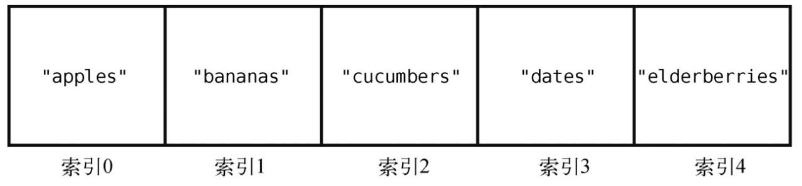
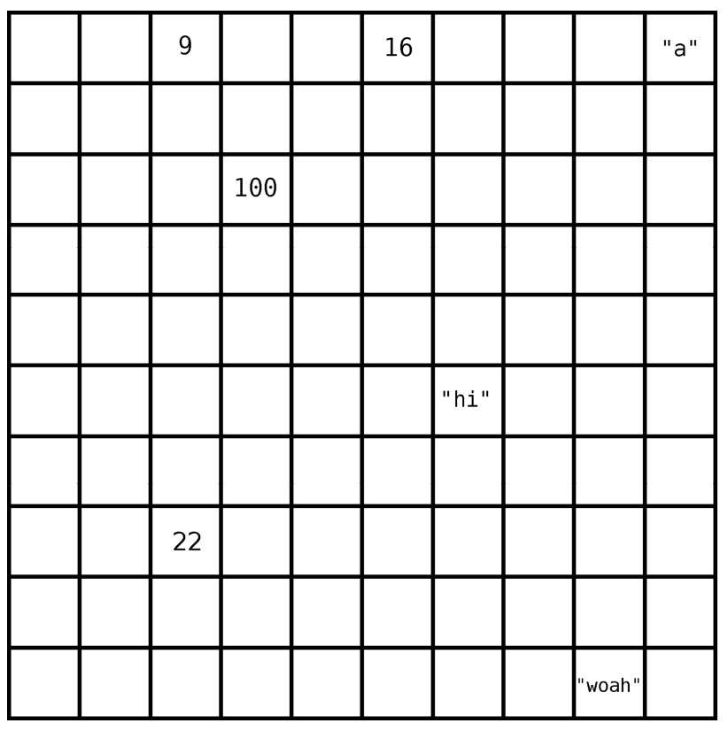
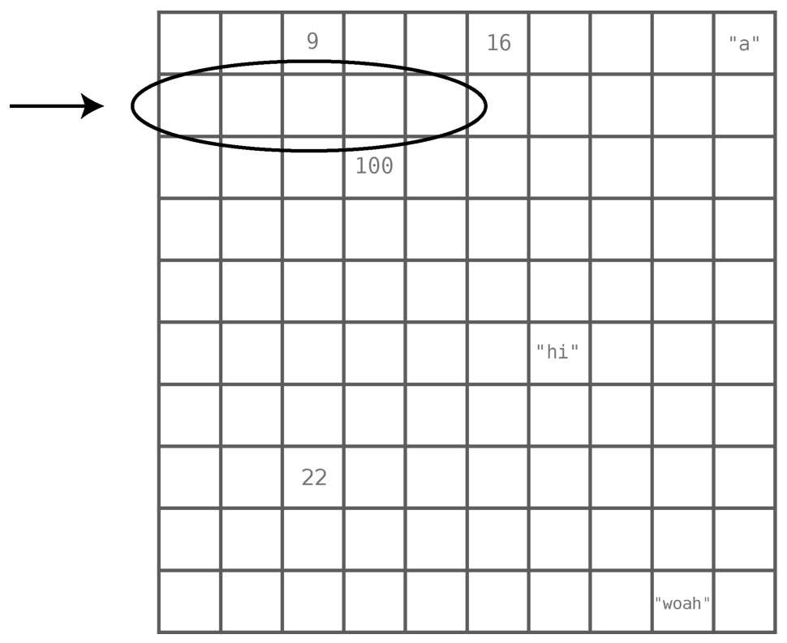
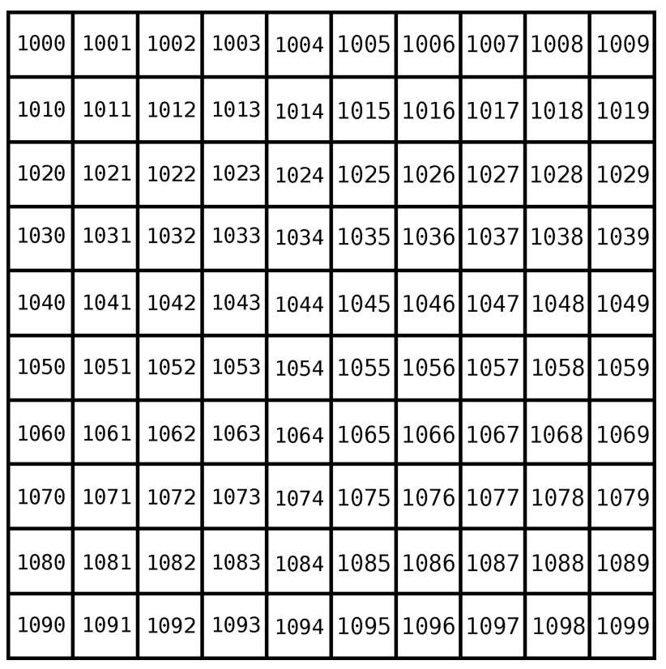
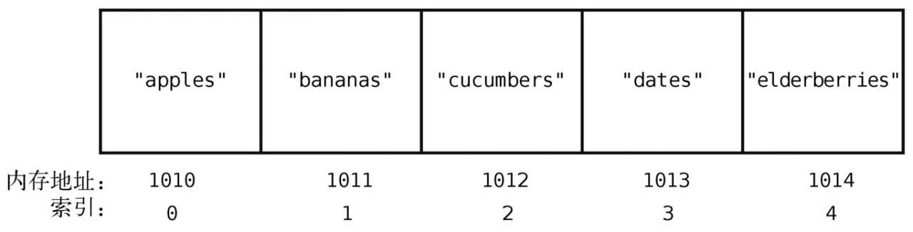

《数据结构与算法图解》笔记
Table of Contents
1. 数据结构为何重要
编程基本上就是在跟数据打交道。计算机程序总是在接收数据、操作数据或返回数据。不管是求两数之和这样的简单程序，还是企业级软件，都运行在数据之上。
数据是一个广义的术语，可以指代各种类型的信息，包括最基本的数字和字符串，比如 Hello World 就是一条数据。但无论多复杂的数据，我们都可以将其拆成一堆数字和字符串来看待。
数据结构 则是指数据的组织形式。看看以下代码：
x = "Hello! " y = "How are you" z = "today?" print x+y+z
这个简单的程序把3条数据串成了一句话。如果要描述该程序中的数据结构，我们会说，有3个独立的变量，分别引用着3个独立的字符串。
但数据结构不只是用于组织数据，它还极大影响着代码的 运行速度 。因为数据结构不同，程序的运行速度可能相差多个数量级。如果你写的程序要处理大量的数据，或者要让数千人同时使用，那么你采用何种数据结构，将决定它是能够运行，还是会因为不堪重负而崩溃。
一旦对各种数据结构有了深刻的理解，你就能写出快速而优雅的代码，编程技能也会更上一层楼。
1.1 基础数据结构：数组
数组 是计算机科学中最基本的数据结构之一，它是一个含有数据的列表。 下列代码就是一个数组，包含5个字符串，每个代表我从超市买的食物。
array=["apples", "bananas", "cucumbers", "dates", "elderberries"]
我们用一种名为 索引 的数字来标识每项数据在数组中的位置(大多数的编程语言中，索引是从0算起的)。

想了解某个数据结构（例如数组）的性能，得分析程序怎样操作这一数据结构。一般数据结构都有以下4种操作：
- 读取：查看数据结构中某一位置上的数据，例如，查看索引2上有什么食品。
- 查找：从数据结构中找出某个数据值的所在，例如，检查"dates"是否存在于食品清单之中。
- 插入：给数据结构增加一个数据值，个格子并填入一个值。例如，往购物清单中多加一项"figs"。
- 删除：从数据结构中移走一个数据值， 例如，把购物清单中的"bananas"移走。
我们将会研究这些操作在数组上的运行速度。
步数
我们也学到第一个重要理论： 操作的速度，不按时间计算，而按步数计算 。
为什么不按时间计算 ：
某项操作在这台机器上要花5秒，但换到一台旧一点的机器，可能就要多于5秒；换到一台未来的超级计算机，运行时间又将显著缩短。所以，受硬件影响的计时方法，非常不可靠。
按 步数 来算，则确切得多。如果A操作要5步，B操作要500步，无论什么硬件上，A都快过B。因此，衡量步数是分析速度的关键。这个步数也常被称为 时间复杂度 。
1.1.1 读取
读取这个操作只需要一步即可，因为计算机本身就有跳到任一索引位置的能力。
在 ["apples","bananas", "cucumbers", "dates", "elderberries"] 的例子中，如果查看索引2的值，计算机就会直接跳到索引2，并告诉你那里有"cucumbers"。
计算机为什么能一步到位
计算机的内存可以被看成一堆格子, 其中有些格子有数据，有些是空白。

当程序声明一个数组时，它会先划分出一些连续的空格子以备使用。创建一个包含5个元素的数组，计算机就会找出5个排成一行的空格子，将其当成数组。

内存中的每个格子都有各自地址，就像街道地址。内存地址只用一个普通的数字来表示。而且， 每个格子的内存地址都比前一个大1 ，如下图：

购物清单数组的索引和内存地址，如下图：

计算机在读取数组中某个索引所指的值时，能直接跳到那个位置上，因为
- 计算机可以一步就跳到任意一个内存地址上。（就好比，要是你知道大街123号在哪儿，那么就可以直奔过去。）
- 数组本身会记有第一个格子的内存地址，计算机知道这个数组的开头在哪里。
- 数组的索引从 0 算起
当我们用计算机读取索引3的值时，它会做以下演算
- 该数组的索引从0算起，其开头的内存地址为1010
- 索引3在索引0后的第3个格子上，索引3的内存地址为1013(1010 + 3=1013)
- 当计算机一步跳到1013时，我们就能获取到"dates"这个值了
数组的读取是一种非常高效的操作，因为它只要一步就可以完成。这种一步(最快的速度)读取任意索引的能力，也是数组好用的原因之一。